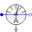
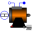

SMR_InverterStarting of synchronous reluctance machine with inverter |
|
Diagram
{kind=link}
Information
This information is part of the Modelica Standard Library maintained by the Modelica Association.
Synchronous machine with reluctance rotor fed by an ideal inverter
An ideal frequency inverter is modeled by using a
VfController
and a three-phase SignalVoltage.
Frequency is raised by a ramp, causing the
reluctance machine to start,
and accelerating inertias. At time tStep a load step is applied.
Simulate for 1.5 seconds and plot (versus time):
currentRMSsensorM|E.I: equivalent RMS stator currentsmrM|E.wMechanical: machine speedsmrM|E.tauElectrical: machine torquerotorAngleM|R.rotorDisplacementAngle: rotor displacement angle
Parameters (8)
| VsNominal |
Value: 100 Type: Voltage (V) Description: Nominal RMS voltage per phase |
|---|---|
| fsNominal |
Value: smrData.fsNominal Type: Frequency (Hz) Description: Nominal frequency |
| fKnee |
Value: 50 Type: Frequency (Hz) Description: Knee frequency of V/f curve |
| tRamp |
Value: 1 Type: Time (s) Description: Frequency ramp |
| T_Load |
Value: 46 Type: Torque (N·m) Description: Nominal load torque |
| tStep |
Value: 1.2 Type: Time (s) Description: Time of load torque step |
| J_Load |
Value: 0.29 Type: Inertia (kg·m²) Description: Load inertia |
| smrData |
Value: Type: SM_ReluctanceRotorData Description: Synchronous machine data |
Components (18)
| ground |
Type: Ground |
|
|---|---|---|
| star |
Type: Star |
|
| signalVoltage |
Type: SignalVoltage |
|
| ramp |
Type: Ramp |
|
| vfController |
Type: VfController |
|
|  | currentRMSsensorM |
Type: CurrentQuasiRMSSensor |
| currentRMSsensorE |
Type: CurrentQuasiRMSSensor |
|
| terminalBoxM |
Type: TerminalBox |
|
| terminalBoxE |
Type: TerminalBox |
|
|  | smrM |
Type: SM_ReluctanceRotor |
| smrE |
Type: SM_ReluctanceRotor |
|
| rotorAngleM |
Type: RotorDisplacementAngle |
|
| rotorAngleE |
Type: RotorDisplacementAngle |
|
| loadInertiaM |
Type: Inertia |
|
| loadInertiaE |
Type: Inertia |
|
| torqueStepM |
Type: TorqueStep |
|
| torqueStepE |
Type: TorqueStep |
|
| smrData |
Type: SM_ReluctanceRotorData Description: Synchronous machine data |